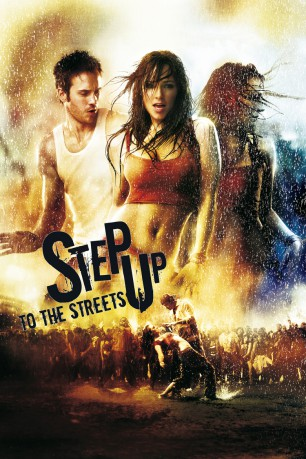
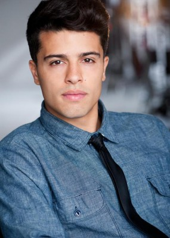

#1388 Step Up 2 - to the Streets
Alternativ: Step Up 2: The Streets
 gesehen am 11.07.2015
gesehen am 11.07.2015
 
 IMDB-Wertung: 6.3 / 10
IMDB-Wertung: 6.3 / 10  Metascore: 50
Metascore: 50 
Das aufsässige Straßengirl Andie findet sich als Besserungsmaßnahme auf der Kunstschule von Maryland wieder, nachdem sie zuvor mit einer illegalen Tanzgruppe für Trouble sorgte. Doch die kesse Revoluzzerin nutzt ihren Aufenthalt an der Elite-Uni nur, um Gleichgesinnte für den anstehende Undergroundwettkampf "The Streets" zu gewinnen. Schon bald hat Andie eine schlagkräftige Truppe an Bewegungswundern zusammen, darunter auch Chase, der nicht nur an den tänzerischen Qualitäten seiner Mitstreiterin Interesse findet.
Jahr: 2008
Dauer: 98 Minuten
FSK: 6
Land: USA Studio: Walt Disney Studios Motion PicturesTonspuren: DTS - ,
Untertitel:
Auflösung: 1080p (1920x1040) Größe: 9216 MB
Genre: Drama, Musik, Musical, Liebe
Regisseur: Jon M. Chu
Drehbuch: Toni Ann Johnson, Karen Barna, Duane Adler
Soundtrack: Aaron Zigman
Darsteller:
 Briana Evigan als Andie
Briana Evigan als Andie- Robert Hoffman als Chase
 Adam G. Sevani als Moose
Adam G. Sevani als Moose- Cassie Ventura als Sophie
- Danielle Polanco als Missy
- Christopher Scott als Hair
-  Luis Rosado als Monster
 Harry Shum Jr. als Cable
Harry Shum Jr. als Cable- LaJon Dantzler als Smiles
- Telisha Shaw als Felicia
- Black Thomas als Tuck
- Jeff 'Rapid' Ogle als Rapid
- Rynan 'Rainen' Paguio als Kid Rainen
- Will Kemp als Blake Collins
 Channing Tatum als Tyler
Channing Tatum als Tyler Sonja Sohn als Sarah
Sonja Sohn als Sarah- J-Boog als DJ Sand
- Daisha Graf als Blake's Class Dancer
- Samantha Zweben als Blake's Class Dancer
- Marian Licha als Mrs. Serrano
- Luis Salgado als Alejandro
- Ava Lenet als Admissions Panel
 Jamal Sims als Bartender
Jamal Sims als Bartender- Carly Lang als Goth Crew
- Chuck Maldonado als West Coast Rider
- Dondraico Johnson als West Coast Rider
- Kate Lacey-Kiley als Administrator
- Dave Scott als Car Stereo Guy
- Elise Arsenault als Clubgoer , uncredited
- Courtney Bell als Cello Girl , uncredited
- Cici Carmen als Salsa Dancer , uncredited
- Colin Conrad als MSA Student , uncredited
- Paul Fahrenkopf als Restaurant Patron / Pedestrian , uncredited
- Jason Ford als MSA Student / Dancer , uncredited
- Nicole Catrice Keller als Street Dancer / Hip hop , uncredited
- Michael James Levy als Dancer , uncredited
- Marili Mejias als Missy's Friend , uncredited
- Melissa Merry als Student , uncredited
- Lauren Minite als Dragon Club Girl , uncredited
- Chris O'Brocki als Dragon Club Thug , uncredited
 Chelsea O'Toole als Ballet Dancer , uncredited
Chelsea O'Toole als Ballet Dancer , uncredited- Norman Outlaw als Neighbor , uncredited
- Mark J. Parker als Dragon Club Dancer , uncredited
- Roger Sands als Club Patron , uncredited
- Nick Shakoour als Dancer , uncredited
- Danielle Souza als Street Dancer , uncredited
 Jake Stormoen als Dan , uncredited
Jake Stormoen als Dan , uncredited Patrick Michael Strange als MSA Student , uncredited
Patrick Michael Strange als MSA Student , uncredited- Gracie Terzian als Dancer , uncredited
- Raquel Yasmin als Club dancer , uncredited
Datei: X:\5-Pentalogie(A-Z)\Step Up\Step Up 2 - to the Streets (2008, FSK6, 1920x1040).mkv seit 30.06.2015
Festplatte: HD Collection-3(N-Z)-6(A-Z)
 Es gibt insgesamt 9 Filme in der Gruppe '5-Pentalogie(A-Z)\Step Up'
Es gibt insgesamt 9 Filme in der Gruppe '5-Pentalogie(A-Z)\Step Up'